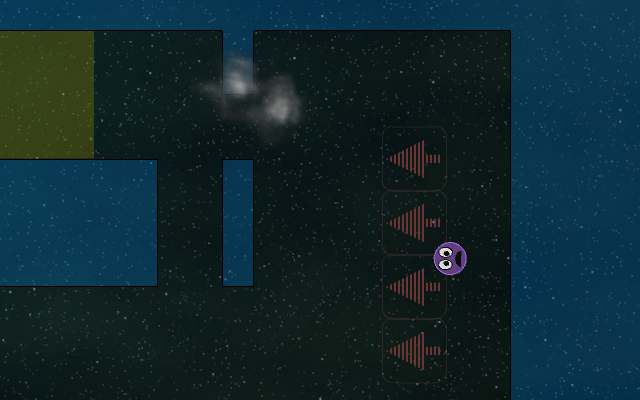
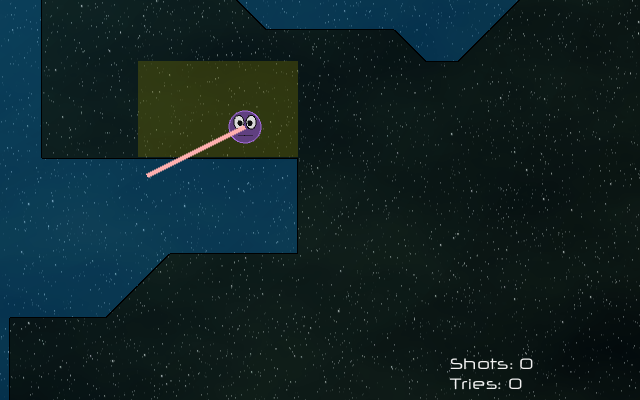
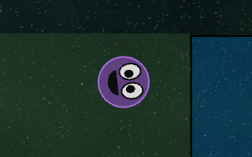
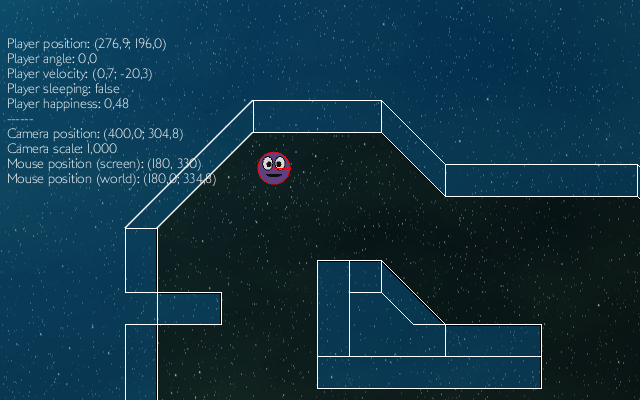
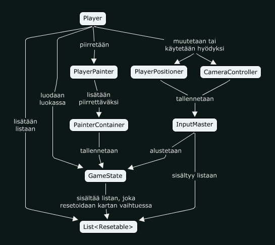

1. Ohjelman kuvaus
Rubber Band Ball on sivulta sivulta päin kuvattu, avaruusteemainen taitopeli, jossa tavoitteenasi on saada laukaistua pallomainen pelaaja paikasta A paikkaan B. Pelaaja pitää saada laukaistua alkualueelta joko vaaleanvihreänä välkkyville suoja-alueille tai maaliin. Mikäli pelaaja pysähtyy näiden alueiden ulkopuolelle, on taso hävitty ja sen joutuu aloittamaan alusta.
Lisämausteena peliin tuo toisesta tasosta alkaen vaikuttava painovoima, jonka kanssa saa etsiä oikeaa logiikkaa tasojen läpäisemiseen. Viidennessä tasossa on lisäksi painovoiman suuntaa vaihtavia kenttiä, joita pitää hyväksikäyttää tason voittamiseksi. Peli pitää kirjaa yksittäisiin tasoihin kuluneista yrityksistä sekä yksittäisten laukaisujen määrästä, joilla taso on onnistuneesti läpäisty. Tasoja pelissä on palautushetkellä valitettavasti vain viisi.

Pelimekaniikan inspiraationlähde on saatu sivustolta, jossa on listattu 300 eri pelimekaniikkaideaa – toteutettu ajatus löytyy täältä: Three Hundred :: Mechanic #024 - Rubber Band Ball.
1.1 Käyttöliittymä
Peliin on toteutettu alkeellinen alkuvalikko, josta pääsee siirtymään itse peliin ja lukemaan ohjeet pelin pelaamista varten. Itse pelissä pelaajan laukaiseminen tapahtuu vetämällä pelaajasta hiirellä pinkki "kuminauha", jonka kulmaa ja pituutta vaihtelemalla pystytään vastaavasti muuttamaan pelaajan lähtökulmaa ja -nopeutta. Peli pitää kirjaa yksittäisen tason läpäisemiseen käytetyistä yrityksistä sekä nykyisen yrityksen aikana käytettyjen laukaisujen määrästä.

Koska yksittäistä tasoa ei voi kerralla piirtää kokonaisuudessaan ruudulle, piirtää peli vain osan 2D-maailmaa kerrallaan. Sen, mitä kulloinkin kuvataan, määrittelee pelimaailmaa kuvaava kamera. Kun kamera siirtyy, siirtyy myös kuvattava alue. Kun pelaaja laukaistaan, kamera seuraa pelaajan sijaintia pehmeästi. Kun pelaaja on pysähtynyt pystytään kameraa puolestaan siirtämään viemällä hiiri ruudun reunoille, jolloin kamera siirtyy haluttuun suuntaan. Kameraa pystytään myös zoomaamaan hiiren rullalla, jolloin ulospäin zoomatessa saadaan selkeämpi kuva koko tasosta tai sisäänpäin zoomatessa päästään ihastelemaan pelaajan valloittavaa ilmettä. Zoomauksen saa tarvittaessa resetoitua napauttamalla hiiren rullan pohjaan.

Peliin on myös toteutettu tehokas debug-tila, jonka saa päälle painamalla D-näppäintä. Debug-tilassa pystyy näkemään erinäisiä peliin olennaisesti liittyviä arvoja sekä mikä parasta, visualisoimaan erinäiset fysiikkamoottoriin vaikuttavat törmäysobjektit. Tämä on suurena hyötynä kehittäjälle mutta mikä ettei myös ilona pelin taustalla jylläävästä tekniikasta kiinnostuneelle pelaajalle.

2. Tekninen toteutus
Ohjelman toteutuksessa keskityin jaottelemaan luokat selkeästi omiksi loogisiksi kokonaisuuksikseen MVC-mallia mukaillen. Pyrin pitämään luokat erillisinä pieninä kokonaisuuksina, joista jokaista voisi hyvän koodaustavan mukaisesti tarkastella helposti erillisinä kokonaisuuksina.
Projekti käyttää Git-versionhallintajärjestelmää pitääkseen yllä selkeää kirjaa muutoksista ja historiasta. Vainoharhainen kehittäjä myös päivittää projektin GitHub-repositorya aktiivisesti, mikäli tietokone sattuisi hajoamaan ja kaikki koodi katoaisi. Tämä mahdollistaa myös projektin kehittämisen useammalta kuin yhdeltä koneelta vaivatta.
Pelimoottori ja käyttöliittymä on toteutettu Slick-kirjaston avulla. Olen käyttänyt State Based Games tapaa rakentaa peliä ja luonut controller-luokkia, jotka reagoivat näppäimistöstä tai hiirestä lähteviin tapahtumiin ja joita voidaan päivittää pelin pääasiallisessa päivityssilmukassa eli update()-metodissa.
2.1 Paketit
Pääosa koodista on jaettu kolmeen pakettiin, joiden lisäksi valikot, karttojen välillä siirtymiset, resurssien lataamiset sekä valikot ovat jaoteltu erilliseen pakettiin ja luokkiin, jotka ovat vastuussa eri pelin loogisista tilanteista. Alla on lyhyesti selitettynä kaikki pelissä määritellyt paketit.
- com.vesalaakso.rbb
- Pääpaketti, jossa on vain yksi luokka, pelin
main-metodin sisältämäRubberBandBall - com.vesalaakso.rbb.controller
- Syötteiden kuuntelijat, joita hallitsee
InputMaster-luokka, sekä liittymätUpdateablejaResetable. - com.vesalaakso.rbb.model ja alapaketit
- Pelin tilanteesta, tallennuksesta ja resursseista vastaavat luokat sekä MVC-mallia lievästi rikkova, fysiikasta vastaava luokka
Physics. - com.vesalaakso.rbb.states
- State Based Games mallia toteuttavat luokat, joista yksi on pelitilanteen kokonaisuudesta huolehtiva
GameState. - com.vesalaakso.rbb.tests
- Alkuvaiheessa Slickiä käyttävät tekniikkademot. Eivät liity varsinaiseen peliin enää mitenkään. Näillä on kuitenkin hyvä testata Slickin eri osien toimintaa uusilla koneilla.
- com.vesalaakso.rbb.util
- Yleishyödyllisen apuluokan
Utilssisältämä paketti. - com.vesalaakso.rbb.view
- MVC-mallin mukaisesti pelitilanteen piirtämisestä vastuussa olevat luokat.
2.2 Oleellisimmat rakenteet
Pelin oleellisin luokka on ehdottomasti 429:llä koodirivillään GameState, jonka kautta varsinaista peliä pyöritetään. Tämän MVC-mallia koordinoivan systeemin kautta saadaan yhdistettyä PainterContainer-luokan avulla kaikki Painter-liittymän toteuttavat View-osion luokat, syötteistä vastaavat KeyAdapter ja MouseAdapter luokasta periytyvät luokat InputMaster-luokan avulla sekä kaikki luokat, jotka haluavat itsensä päivitettävän eli jotka toteuttavat Updateable-liittymän. Myös ne luokat, jotka täytyy resetoida kartan vaihtuessa (ts. toteuttavat liittymän Resetable), lisätään Updateable-liittymän toteuttavien olioiden tavoin LinkedList-tietorakenteeseen omaan attribuuttiinsa.
Kaikki syötteistä vastuussa olevien luokkien oliot lisätään InputMaster-nimisen luokan tietoon addMouseListener ja addKeyListener -metodeilla. InputMaster hoitaa samalla myös kaikkien lisättyjen kuuntelijoiden päivityksen ja resetoinnin, mikäli ne toteuttavat Updateable tai Resetable liittymän.
Pelissä on yksi PainterContainer-olio, johon lisätään halutussa piirtojärjestyksessä kaikki eri piirtäjäluokat. Tämän luokan paintAll() metodia kutsumalla saadaan helposti pyöräytettyä läpi kaikki piirrettävät selkeästi ja ilman harmaita hiuksia. Jokainen Painter-luokka myös kertoo, haluaako se itsensä piirrettävän maailmankoordinaatetteihin vai ruutukoordinaatteihin. Maailmakoordinaatistoon piirrettävät asiat ovat riippuvaisia maailmaa kuvaavan kameran sijainnista ja skaalauksen/zoomin asteesta kun taas ruutukoordinaatteihin piirrettäviin asioihin kamera ei luonnollisestikaan vaikuta.
GameState-luokka luo myös useat Model-osan luokkien instanssit ja antaa niiden viittauksen asiasta kiinnostuneille piirtäjille ja syötteiden kuuntelijoille. Esimerkiksi alla on määritelty kaaviossa (ilman debug-ominaisuuksia), miten pelaajasta vastuussa oleva Player-olio luodaan, missä ja miten sitä muokataan ja minkä luokan kautta se piirretään.

2.3 Ulkoiset kirjastot
Jo projektin ideointivaiheessa totesin heti alkuun, että Swing ja Graphics2D -yhdistelmä ei tulisi riittämään projektilleni, vaan lähdin aktiivisesti etsimään apuvälineitä ja kirjastoja, joilla pelini toteuttaisin. Valitsin apuvälineikseni grafiikka- ja pelimoottoriksi Slick-kirjaston, fysiikkamoottoriksi Slickin yhteyteen rakennetun fizzyn ja tasoja varten Slickilläkin toimivan Tiledin.
2.3.1 Slick grafiikka- ja pelimoottorina
Slick on LWJGL:n päälle rakennettu helppokäyttöinen grafiikka- ja pelimoottori. Slickistä paljastui muutama arkkitehtuurisesti hyödyllinen ominaisuus, joita pystyin käyttämään pelissäni saaden luokkia pieniksi, omiksi kokonaisuuksikseen. Input-järjestelmä salli addMouseListener ja addKeyListener metodeillaan erottaa vaivatta syötteiden lukemisen pelin pääluokasta erilleen ja käytinkin tätä mahdollisuutta hyödykseni. Slick myös lataa sisäisesti kaikki resurssit ResourceLoader luokkansa kautta, johon voi lisätä omat resurssien polkujen määrittäjät ResourceLocation liittymän avulla. Sain tällä tavalla loppujen lopuksi helposti toimimaan resurssien lataamisen suoraan jar-tiedoston sisältä käyttämällä tekemääni RbbResourceLocation luokkaa. Slickistä löytyi myös monet helpot primitiivien piirtämiseen tarkoitetut metodit ja transformaatiomatriisien määrittelyt, joten itse piirtäminen ja koordinaattien kanssa kikkailu oli melko suoraviivaista.
2.3.2 Fizzy fysiikan mallintamiseen
Fysiikoita varten valitsin Slickin mukana kätevästi tulevan Fizzyn, joka on yksinkertaistettu wräpperi JBox2D-fysiikkamoottorikirjastolle. JBox2D puoletaan on Java-kielelle käännetty versio Erin Catton tekemästä loistavasta Box2D-fysiikkamoottorista.
2.3.3 Tiled tilekartat
Kartat tein Tiled-ohjelmalla ja tallensin ne Tiledin omaan TMX-muotoon, jonka pystyin suoraan lataamaan ja piirtämään Slickin sisäänrakennettujen luokkien avulla helposti. Koska karttatiedostot olivat XML-tiedostoja, niitä oli helppo lukea ja nähdä muutokset editoinnin jälkeen.
2.4 Suoritettava jar-paketti ja Web Start
Koska Slickillä oli kiitettävä määrä jo valmiita Web start demoja, oli luonnollista olettaa että on myös täysin mahdollista tehdä sellainen omasta projektistani. Samaan syssyyn piti saada tehtyä myös ajettava jar-tiedosto. Käytin näiden aikaansaamiseen rakentamaani XML-muotoista Ant-konfiguraatiotiedostoa. Antilla onnistui myös kätevästi javadoc-dokumentaation muuttaminen HTML-tiedostoiksi. Web start ohjelma vaatii täydet suoritusoikeudet koneelle, jotta se oikeasti toimisi, joten se täytyi myös allekirjoittaa digitaalisesti. Tätä tarkoitusta varten Javan JDK:n mukana tulee jarsigner-binääri, jonka avulla pystyin myös allekirjoittamaan paketit itse tehdyllä sertifikaatilla. Omakutoiset sertifikaatit eivät kuitenkaan ole luotettavia, mutta tässä tapauksessa en halunnut maksaa siitä että saisin kouluprojektini luotettavasti allekirjoitettua maksetulla sertifikaatilla. Ant rakentaa ajettaessaan suorituskelpoisen, allekirjoitetun jar-tiedoston projektin juureen. Web start ominaisuutta varten projektin webstart-kansiosta löytyy vaadittavat JNLP-tiedostot. Kaikki itse JNLP-tiedostoihin linkitetyt kirjastot piti myös allekirjoittaa samalla sertifikaatilla kuin itse peli.
3. Kokemukset projektista
Alkuperäisessä suunnitelmassa tavoitteenani oli saada peliin useita eri ominaisuuksia, jotka osaltaan toimisivat pelin vaikeustasoa muuttavina elementteinä. Totta puhuen en uskonut että olisin saanut toteutettua listasta niitä kaikkia ominaisuuksia, jotka suunnitelmaan kirjoitinkin: Painovoima, piikikkäät esteet, lepopaikat josta pelaajan voi pistää uudelleen liikkeelle, painovoimakentät jotka vaihtavat painovoiman suuntaa. Vain piikikkäät esteet jäivät puuttumaan, muuten olen tyytyväinen ominaisuuksien määrään. Olen erityisen tyytyväinen siihen, miten nätisti fysiikan mallinnus loppupeleissä toimii.
Mukavaa lisäpiristettä peliin toi kaverilta saamani linkki Youtube-videoon, jossa pelinkehittäjät Martin Jonasson ja Petri Purho puhuvat aiheesta "Juice it or lose it". Mitä tämä käytännössä tarkoittaa, on pelissä esiintyvän liikkeen sulavoittamista, partikkeliefektien ja äänien lisäämistä, sekä muunlaista pientä piristettä joilla pelin saa eläväisemmäksi. Yritin pitää tätä ajatusta mielessäni pelin teon aikana ja lisäsinkin sulavat liikkeet kameran siirtelyyn ja zoomailuun sekä valikkojen välillä siirtymiseen. Kaverukset olivat pistäneet myös esityksessään demotun Breakout-klooninsa koko kansan nähtäville. Varsin hienon näköistä settiä.
3.1 Teknisten ratkaisujen toimivuus
Slick, fizzy ja Tiled -kombinaatio osoittautui oivaksi valinnaksi, vaikkakin fizzyn puutteet aiheuttivat allekirjoittaneella harmaita hiuksia. Tiled varsinkin yllätti karttaeditorin monipuolisuudellaan ja kätevyydellään selkeästi, enkä tullut katuneeksi hetkeäkään valintaani toteuttaa tasot sen avulla. Ainoa ongelma oli Tiledin suhteen se, että Slickin TiledMapPlus-luokka ei toteuttanut oikein polygonien tallennusta ja niiden hakemista, joten jouduin puukottamaan suoraan Slickin lähdekoodeja ja lisäämään kyseisen ominaisuuden itse. Muuten olisi pitänyt sanoa hyvästit mukaville viistoille törmäyskulmille.
Periaate jakaa luokat mahdollisimman selkeästi MVC-mallin mukaisesti tuotti välillä ongelmia suunnitellessa luokkien rakennetta, mutta päätyi koodin toteutusvaiheessa olemaan yllättävänkin yksinkertaista. Pienet asiat, kuten kaikkien piirtäjien lisääminen yksittäisessä apumetodissa GameState#addPainters(), teki uusien lisähienouksien lisäämisen rikollisen helpoksi. Suunnitteluvaiheen ajatusta pelin mallin sisältämästä Game-luokasta toteutuu GameState luokassa lähes täysin suunnittelujen mukaisesti. Pelin piirtämisen handlaavien luokkien piti suunnitteluvaiheessa periytyä AbstractPainter-luokasta ja tämän idean toteutti sopivasti Painter-liittymä. Samaten Controller-puolen idea luoda erillisiä luokkia, jotka reagoisivat erinäisiin pelin tapahtumiin, oli toimiva ja toteutettu.
Ainoastaan Physics-luokka oli sellainen, joka ei lopulta iskeytynyt mukavasti MVC-malliin. Luokka paisuikin lievästi, vaikka siitä sain erotelluksi pelaajan törmäyksiin reagoivan PlayerListener-luokan ja fysiikkamoottorin visualisoivan, debug-tilassa toimivan PhysicsPainter-luokan. Fysiikkamoottorin päivitys täytyi kuitenkin tehdä jokaisella päivityskierroksella, joten koin sen tarpeeksi selkeäksi toteuttaa kuitenkin saman luokan sisällä.
3.2 Kehityksen aikana ilmenneet virheet
Hyvästä arkkitehtuurista (ainakin omasta mielestäni hyvästä) johtuen ei toteutuksen aikana varsinaisesti tullut eteen paljoa hankalia bugeja. Ehdottomasti suurin päänvaiva oli fysiikkamoottorin keskeneräisyys. Pelaajaa esittävä ympyrä pomppasi jostain syystä aina osuessaan törmäysobjektiin lähes yhtä korkealle kuin mistä se lähtikin, eikä minkään ominaisuuden muuttaminen tuntunut vaikuttavan asiaan ollenkaan. Monen epätoivoisen tunnin selattuani Internetin ihmeellistä maailmaa ja avauduttuani useasti irkissä, löysin ratkaisun: Takaisinponnahdusvoiman määrittelee jostain käsittämättömästä syystä vain se pinta, jolle on määritelty suurempi arvo restitution-nimiseen ominaisuuteen. Tällöin Slickin määrittelemä oletusarvo 0.9 oli aina olemassa kartasta luoduille törmäysobjekteille.
Yksi koodirivi lisää fysiikkamoottorin kartan alustuksen yhteyteen ja ongelma oli korjattu. Ihanaa.
Toinen ärsytyshetki oli, kun huomasin ettei pelaajalla näytä olevan pyörimiskitkaa ja se valuu aina reunan yli vaikka pelaajaa esittävällä ympyrällä olisi kuinka hidas pyörimisvauhti. Tämän asian korjaamiseen kului yllättävän paljon aikaa, sillä aluksi luulin että ominaisuus tietenkin olisi fysiikkamoottoriin sisäänrakennettuna ja luulin joidenkin arvojen vaihtelun vaikuttavan asiaan. Tiukan googlettelun jälkeen paljastui karu totuus: Eipä ole tehty. Pyörimiskitkan käsin mallintaminen vei yllättävän paljon koodirivejä ja sitä sai muokkailla useaan otteeseen, että lopulta olin siihen tyytyväinen.
Kolmas turhatumisen lähde oli se, ettei fysiikkamoottori näyttänyt pysäyttävän oikein liikkuvaa objektia, kun sen nopeus on tarpeeksi pieni. Pelaaja vaikutti pomppivan ikuisesti millin korkeudella maasta ja painovoimattomassa tilassa leijaileva pelaaja ei koskaan lopettanut hyvin pientä pyörimisliikettä. Jälleen kerran ratkaisuksi tuli käsin toteuttaa rajat, joiden jälkeen objekti pakotettaisiin pysähtymään.
Nämä bugit olisi voinut välttää sillä että fizzy-kirjastolla olisi ollut kattava dokumentaatio ja aktiivinen käyttäjäkunta. Näin ei kuitenkaan ollut, vaan tiesin jo alusta lähtien meneväni kohtuullisen tuntemattomalle maaperälle. Aktiivisuudesta Slickin foorumeilla olisi voinut olla apua, sieltä olisi saattanut löytää neuvoa muiltakin.
3.3 Oman työskentelyn arviointi
...
4. Yhteenveto
...
5. Liitteet
...